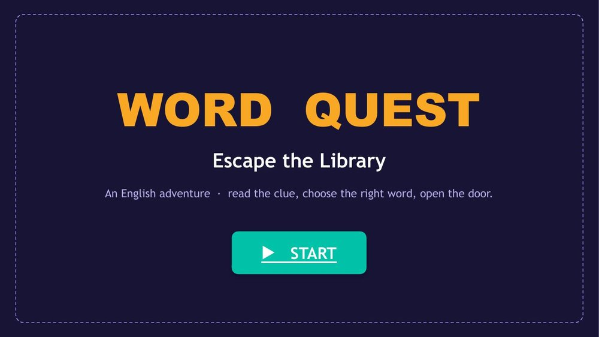
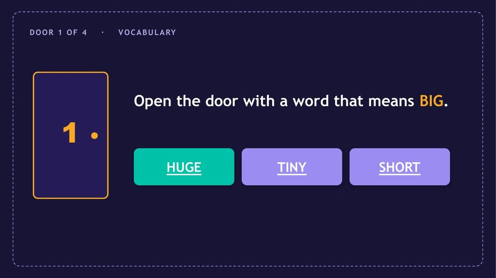
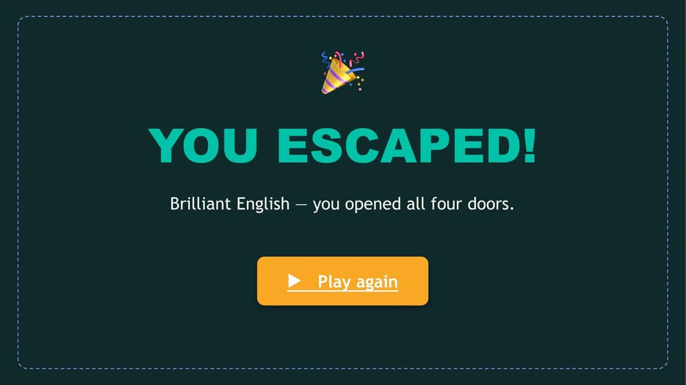
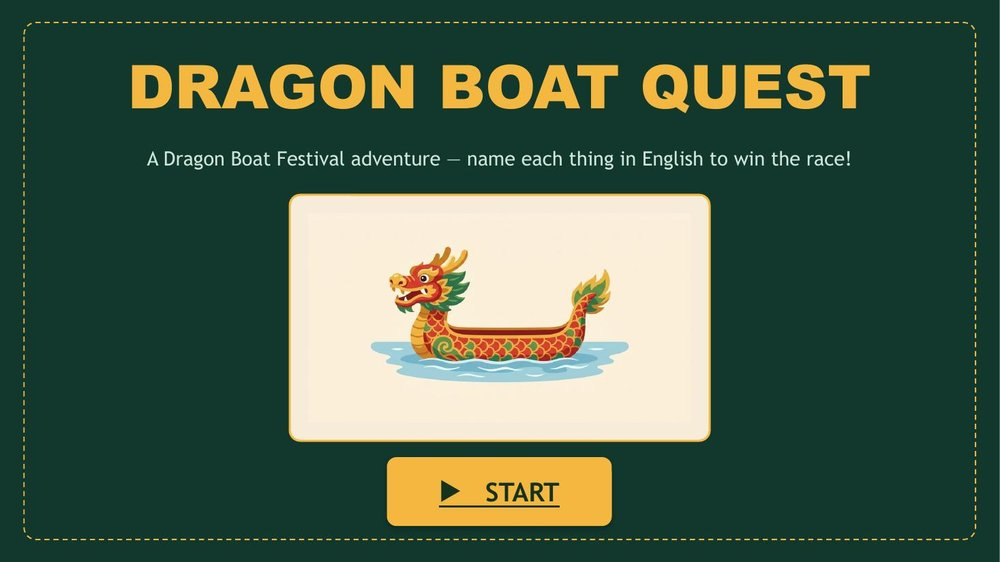
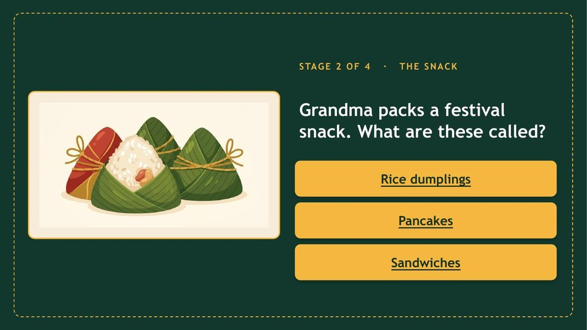
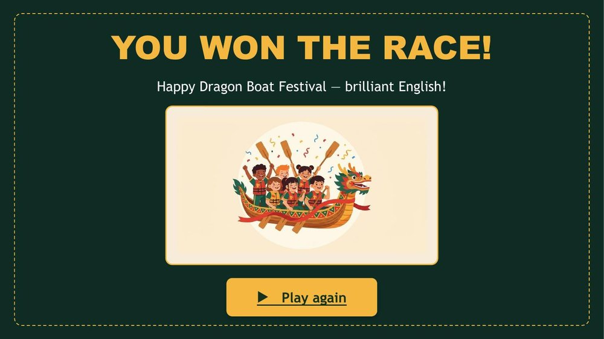

Not a quiz — a real game. An escape room, a branching adventure, a quiz board your class plays in teams. The whole secret is two things you already have: slides and links between them. AI writes the questions, designs the slides, and maps out the paths. You'll see a ready-to-play English game you can download today.
不是測驗——是真正的遊戲。密室逃脫、分支冒險、讓全班分組玩的搶答盤。整個祕訣就是你早就有的兩樣東西:投影片,以及投影片之間的連結。AI 幫你寫題目、設計版面、規劃路線。這一頁還附一個今天就能下載、可以玩的英文遊戲。
In a normal slideshow, slide 1 goes to slide 2 goes to slide 3. In a game, a slide asks a question, and each answer jumps somewhere different. Right answer? Jump forward. Wrong answer? Jump to a "locked" slide. That branching is the entire trick.一般簡報是第 1 頁到第 2 頁、第 2 頁到第 3 頁。在遊戲裡,一張投影片問一個問題,而每個答案跳到不同的地方。答對?往前跳。答錯?跳到「上鎖」那頁。這個「分支」就是全部的祕訣。
Branching and navigation are PowerPoint's superpower. Live scoring and dragging things around are not. Choose a game built on jumping between slides and you'll have a great time.「分支」和「導覽」是 PowerPoint 的超能力;「即時計分」和「拖來拖去」則不是。選一個靠「投影片跳轉」的遊戲,就會很順。
These need fragile macros in PowerPoint. Make them as a web page instead — see Interactive Games and Lesson 5.這些在 PowerPoint 要靠脆弱的巨集。改做成網頁更好——見互動遊戲與第五課。
However you work, AI writes every question, the wrong-answer traps, and the design. The only thing a human decides is the shape of the game.不管用哪種方式,每一題、每個陷阱選項、每張版面都由 AI 寫。人要決定的只有「遊戲的樣子」。
Ask any AI (Gemini, Claude) for a slide-by-slide game plan: what's on each slide, and which button links to which slide. Build the slides, then add the links yourself — it's one easy menu (Part D below).請任何 AI(Gemini、Claude)給你一份「逐頁遊戲企劃」:每張投影片放什麼、哪個按鈕連到哪張。把投影片做好,再自己把連結加上去——就是一個簡單的選單(下面 Part D)。
Copy-and-paste prompt — ask for the game plan可複製的提示詞——請 AI 給你遊戲企劃
Design an English-learning escape-room game in PowerPoint
for [grade / level] students, on the topic [vocabulary / tenses / …].
- [4] "doors", each a different English skill.
- Each door slide: a clue + 3 answer buttons.
- The right button jumps to the NEXT door; wrong buttons jump to a
"Locked — try again" slide that returns to the same door.
- A start slide and a "You escaped!" winner slide.
Give me a slide-by-slide map: for every slide, the text on it and
exactly which slide each button should link to. Keep the English
simple and the design colourful.This is the only "new" thing to learn, and it takes ten seconds per button:這是唯一要學的「新東西」,每個按鈕只花十秒:
Here's a finished game an agent built — eleven slides, four doors, all clickable. Students read an English clue, choose a word, and an open door takes them forward. A wrong choice locks them out until they try again. Open it, press Play, and click.這是一個由代理人做好的遊戲——11 張投影片、4 道門,全部可點。學生讀英文線索、選一個字,門開了就前進;選錯就鎖住,直到再試一次。打開它、按播放、開始點。



A wall of words is forgettable; a picture pulls students in. The same AI that writes your questions can illustrate them — ask for one consistent style and drop the pictures onto your slides. Here's a second example: a Dragon Boat Festival game where every stage shows an illustration and you name it in English.一整片文字很容易忘;一張圖卻能把學生吸進去。幫你寫題目的同一個 AI 也能幫你畫插圖——指定一種一致的風格,再把圖放進投影片就好。這是第二個範例:一個端午節遊戲,每一關都有插畫,你用英文說出它的名字。



Prompt — ask AI for matching illustrations提示詞——請 AI 畫一組同風格插圖
Draw a set of illustrations for a Dragon Boat Festival game:
a dragon boat, rice dumplings (zongzi), a drum, a paddle.
Use ONE consistent style for all of them: flat, friendly, colourful
children's-book vector art, on a plain cream background, no text.| PowerPoint game簡報遊戲 | Web game (a page)網頁遊戲(一頁) | |
|---|---|---|
| Best for最適合 | Stories, escape rooms, quiz boards, choices.故事、密室、搶答盤、做選擇。 | Scoring, dragging, typing, saving results.計分、拖放、打字、存結果。 |
| Runs where在哪裡跑 | Any computer with PowerPoint, offline.任何有 PowerPoint 的電腦,離線可用。 | Any browser, by a link — phones too.任何瀏覽器、一個連結——手機也行。 |
| On the projector投影到大螢幕 | Perfect — already a slideshow.完美——它本來就是簡報。 | Fine, full-screen in the browser.也行,瀏覽器全螢幕。 |
| Share with students分享給學生 | Send the file (or play together in class).傳檔案(或全班一起玩)。 | Send a link — nothing to download.傳一個連結——不用下載。 |
In PowerPoint, set transitions to "On Mouse Click: off" so only the buttons move the game. AI can note this in the plan.
在 PowerPoint 把切換設成「按滑鼠時:關閉」,讓只有按鈕能前進。AI 可以在企劃裡幫你註明。
Yes — slide-to-slide links work there too. Drag-and-drop and macros don't, so stick to the jumping kind.
可以——投影片之間的連結在那裡也能用。拖放和巨集不行,所以做「跳轉型」就好。
Sounds and simple animations, yes. Score-changing timers need macros — that's the web's job. Keep games joyful, not high-stakes.
音效和簡單動畫可以。會影響分數的計時器要巨集——那是網頁的工作。讓遊戲保持快樂,別變成高壓考試。